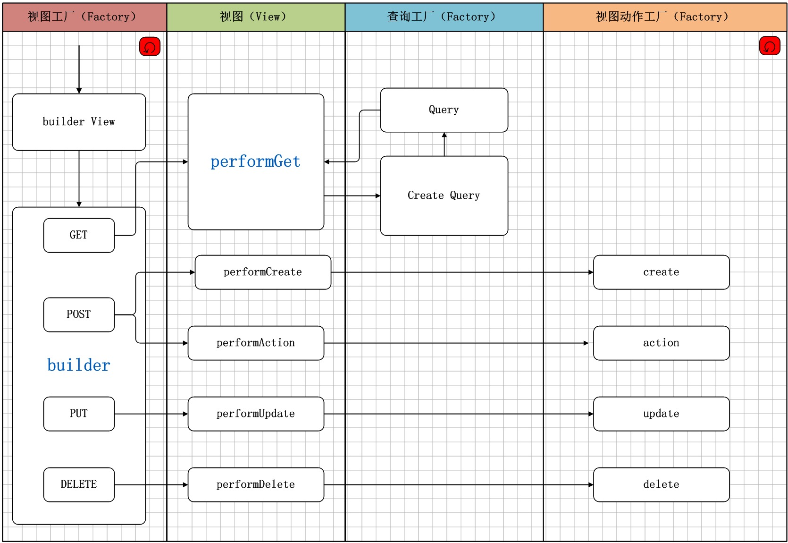

视图工厂时序图
视图工厂时序图如下所示：


1. 视图工厂（Factory）
builderView : 视图创建入口；
通过API的不同，对视图请求进行了分支处理：
- GET：获取视图数据，包括Schema，Schema & Data，Schema & DataDetail等；
- POST：新增数据或特殊数据操作，通过视图动作标识进行区分；
- PUT：更新数据；
- DELETE：删除数据；
注意，在视图处理中会进行递归处理，从视图开始，一直递归处理至路由地址的最后一个视图；
2. 视图（View）
视图工厂在处理过程中，首先实例化视图，根据请求不同进行分支：
- performGet 组装视图 Schema 和数据内容；
- performGetSchemaView 组装视图Schema；
- performGetDataView 组装视图 Schema 及数据内容；
- performGetDetailView 组装视图 Schema 及一条数据的详细内容；
- performCreate 进入视图动作工厂新增，由视图动作工厂调用新增方法；
- performUpdate 进入视图动作工厂更新方法，由视图动作工厂调用更新方法；
- performDelete 进入视图动作工厂删除方法，由视图动作工厂调用删除方法；
- performAction 进入视图动作工厂特殊操作方法，由视图动作工厂调用特殊动作处理方法；
3. 查询工厂（Factory）
视图调用查询工厂实例化查询，由查询为视图提供数据；
4. 视图动作工厂（Factory）
视图调用视图动作工厂中的方法，进行数据操作；
- create : 数据创建操作；
- update : 数据更新操作；
- delete : 数据删除操作；
- action : 其他数据操作；